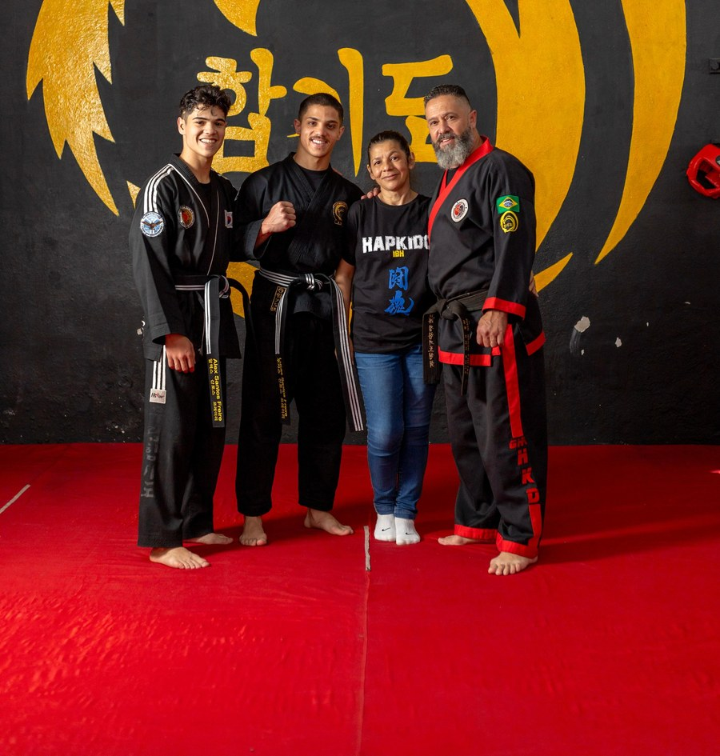
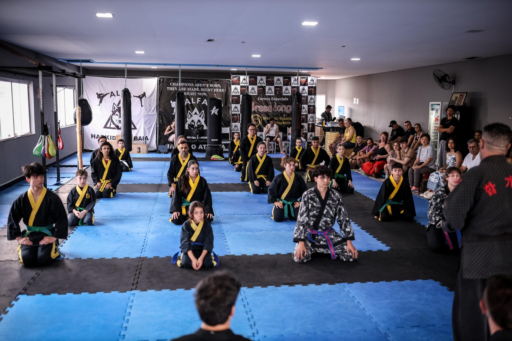

Três gerações de transmissão direta do Hapkido até o Brasil — hoje o Instituto segue ao lado da segunda geração da família à frente do IBH.

Representante da 3ª geração do Hapkido no Brasil, com mais de 30 anos de prática. Treinou por muitos anos ao lado do Mestre Sérgio Fernandes e dos Grão-Mestres Yun Sik Kim e Kim Jong Man antes de, em 2007, deixar a capital paulista e se mudar para Piracaia — onde fundou o Instituto Brasileiro de Hapkido e iniciou o que se tornaria uma verdadeira revolução do Hapkido no interior do estado.
Fundador e presidente vitalício do IBH, é hoje 9º DAN de Hapkido pelo IBH, 6º DAN de Hapkido no Brasil, 5º DAN pela TUKKONG, 4º DAN de Hangumdo e 1º DAN de Hankido. Quase vinte anos depois da fundação, continua ministrando pessoalmente a turma adulta e o programa de faixas-pretas em Piracaia.
Mais que dirigente, o Mestre competiu pessoalmente em mundiais de Hapkido: conquistou o 2º lugar individual no 1º Korea Open, em 2013, e o 3º lugar em Partner Self Defense no Mundial do México, em 2017 — subindo, no mesmo período, de árbitro internacional Classe C-1 (2013) para Classe B-1 (2015). Desde 2013 é GHA Master Instructor pela Global Hapkido Association, entidade internacional fundada pelo Grão-Mestre Hee Kwan Lee. Em 2015, recebeu no mesmo dia o Diploma da Assembleia Legislativa de São Paulo, o Certificado de Reconhecimento da GHA e o título de Mestre Honoris Causa em Artes Marciais, concedido pela FACEI — Faculdade Einstein e pelos autores do livro Grandes Mestres das Artes Marciais do Brasil. Em 2016, durante o Mundial da Tailândia, recebeu também o título de Cidadão Honorário de Pattaya, concedido pela prefeitura da cidade.
Hoje, o Mestre segue acompanhado de sua esposa, Renata Maria Santos Freire, uma mulher de força, dedicação e sensibilidade, que esteve ao seu lado desde o início dessa história. Mais do que companheira de vida, exerce um papel fundamental nessa trajetória, contribuindo para a construção e continuidade desse importante legado.
Ao lado deles estão os filhos, Lucas Santos Freire e Alex Santos Freire, ambos formados no próprio Instituto, que hoje dão continuidade à história e aos ensinamentos da família à frente do IBH.

"O verdadeiro guerreiro marcial é aquele que ama de verdade a sua arte: trabalha, acredita e se dedica pra levar o nome dela adiante e mostrar sua essência — pra que ela nunca enfraqueça nas próximas gerações, não importa a dificuldade." — Chong Kwanjangnim Raul Braga Freire

Registros do acervo pessoal do Mestre, de diferentes fases da sua história com o Hapkido — da formação em São Paulo às apresentações públicas do IBH em Piracaia. Mais fotos e histórias como essas estão sendo reunidas para o livro e para a Comunidade do Instituto.